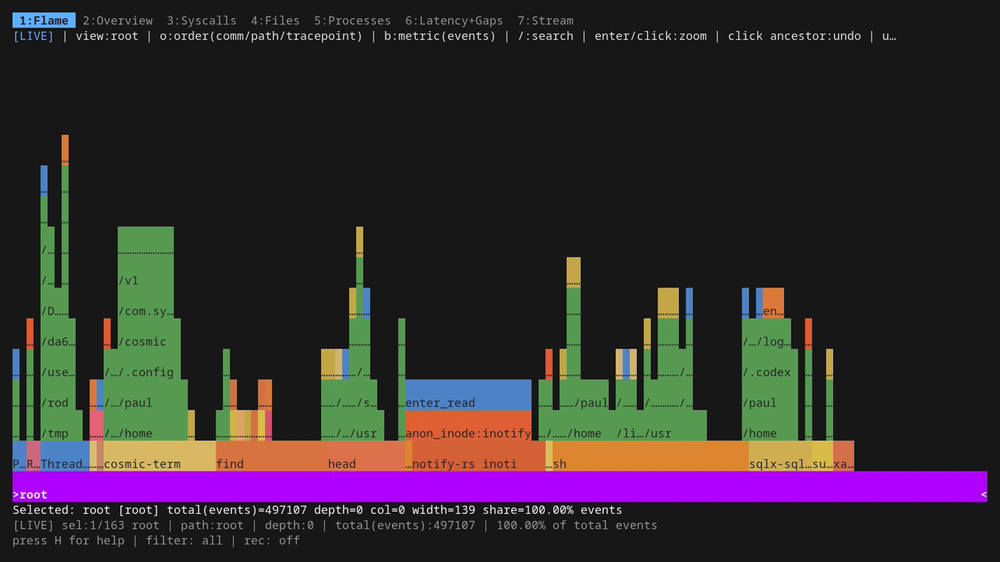
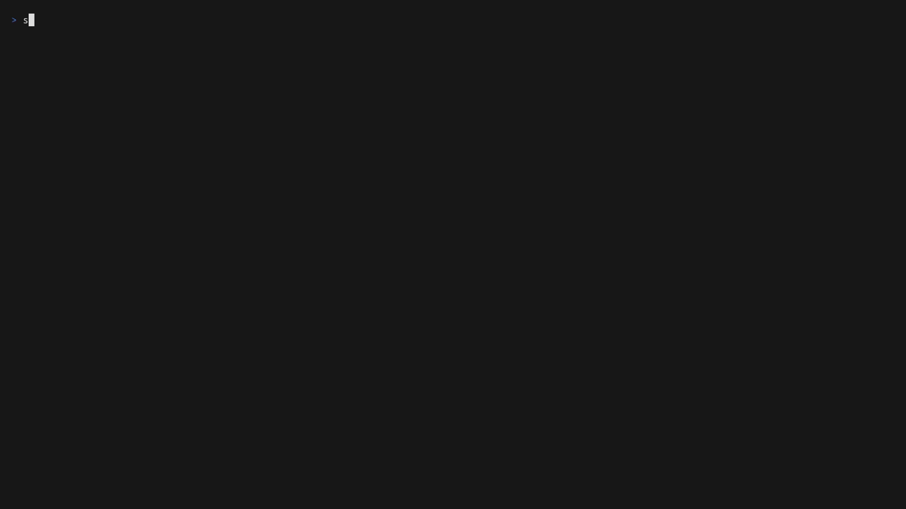

I/O Riot NG 1.2.0: beyond file I/O
I've released I/O Riot NG 1.2.0. The biggest change since 1.1.0 is the range of syscalls it can trace: networking, memory, scheduling and more now sit alongside filesystem calls. There are also new controls for busy traces, and a lot of fixes to how events are named, counted and recorded.
If you haven't seen it before, ior is my Linux syscall tracer with a terminal dashboard and live flamegraphs. It uses eBPF to collect events from the kernel. The earlier posts walk through the dashboard; this one covers what's changed since the May release.
What is eBPF?
I/O Riot NG v1.2.0 source

Table of Contents
More than file I/O
Syscalls are now grouped into 12 families: FS, Network, Memory, Signals, Sched, IPC, Time, Process, Security, Polling, AIO and Misc. Filesystem tracing remains the default. You choose the others when you need them, rather than attaching everything at startup.
For example, this opens a trace with filesystem and network probes:
sudo ./ior -trace-families FS,Network
Or look at time and polling calls:
sudo ./ior -trace-families Time,Polling
You can also select individual syscalls or kinds of syscall, and exclude matches. That's useful when one noisy call is getting in the way of the question you're trying to answer.
Syscall families and selection flags
Change the trace while it runs
You don't have to settle on the right probes before opening the dashboard. Press O to open the probes dialog, then Tab for its Families view. Space attaches or detaches the selected family. The Syscalls view gives you the same control over individual calls.
Family changes run in the background with progress shown. If your kernel lacks a tracepoint, ior reports it and continues with the others. Your selection also survives a trace restart when you change the target or filters.
One distinction worth remembering: [ and ] change which family the dashboard displays. They don't attach additional probes. Use the probes dialog to change what gets collected.
When every event is too much
Sampling can now be configured by family or individual syscall. A rate of 1 keeps every call, while N means one in N. For example, this keeps one in ten filesystem calls in the event stream:
sudo ./ior -trace-families FS -syscall-sampling-families FS=10
The TUI also supports rate 0: count the calls without emitting individual rows. That's the default for futex* and clock_gettime once their probes are attached. These calls can be useful in aggregate without filling the stream with rows.
Sampling needs to be visible in the output. Recordings carry sampling metadata, and the end-of-run statistics include the calls the kernel counted without emitting. Those totals are exact only when the run supports that claim. Loss makes them lower bounds; filters the counters cannot apply make them unavailable. Gaps between sampled rows are gaps between emitted calls, not proof that nothing happened in between.
Output formats and sampling details
Getting the attribution right
A file descriptor number is reused. A process forks, closes a descriptor, opens another file, or replaces itself with a new executable. Keeping the correct filename attached to each event through all of that takes more care than simply remembering the last name seen for a number.
This release includes fixes around descriptor reuse, fork and exec, and relative paths. When the tracer cannot establish a name, it leaves that uncertainty visible.
Interrupted syscalls have had similar attention. ior can fold restarted calls together, but refuses the fold when missing records make the pairing uncertain. Kernel ring-buffer drops and skipped probe runs are reported too. Warnings are accessible from the Stream tab, so you can inspect them during a session.

Longer sessions and safer recordings
The live flamegraph now bounds its trie size. When it reaches the limit, it combines selected subtrees into an [other;] bucket, preserving totals while losing some detail about where those totals came from. Snapshot work is also reduced by pruning before traversing hidden subtrees. This makes large traces cheaper to refresh, although compaction still pauses ingestion briefly.
Recording and export paths have received plenty of attention as well. Automatically named exports avoid collisions, and native recording reads now reject truncated or corrupt compressed data and unexpected trailing payloads. A damaged file should produce an error rather than appear to load successfully.
Headless traces selected by PID or TID stop when their target exits. And the command-line parser now rejects stray positional arguments: a typo before -pid can no longer silently leave the following flag unused.
There are smaller terminal fixes throughout: resize handling, narrow layouts, Unicode input, search feedback and flamegraph refreshes when switching tabs. These don't make for exciting screenshots, but they matter while using the tool.
Try it
The source is tagged v1.2.0 on both GitHub and Forgejo. The documented container build produces the binary:
git clone https://github.com/snonux/ior.git
cd ior
git checkout v1.2.0
./scripts/build-with-docker.sh
sudo ./ior
You'll need Docker for that build, and a Linux/amd64 host with kernel BTF support to run the tracer. The README has the native build instructions too.
The tutorial now has 18 animated examples, including family selection, sampling and Stream warnings. That's probably the quickest way to see the new controls before tracing a process yourself.
Build and usage instructions
Illustrated tutorial
Full changes since v1.1.0
Forgejo mirror
Other related posts:
2026-05-17 Unveiling I/O Riot NG — Part 3: under the hood
2026-05-11 Unveiling I/O Riot NG — Part 2: install and compile once, run everywhere
2026-05-08 Unveiling I/O Riot NG — Part 1: a guided tour
2018-06-01 Realistic load testing with I/O Riot for Linux
E-Mail your comments to paul@nospam.buetow.org :-)
Back to the main site